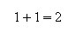
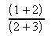
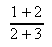
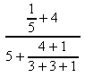

| [zurück] | [Hauptmenü] | [weiter] |
OpenOffice.org Formel
02 - eine Formel erstellen
Der Formelschreiber ist prinzipiell so ausgelegt, dass man in erster Linie über das Kommando-Eingabefeld dem Programm die logische Struktur der Formel eingibt und dann daraus die Größe, Form und Positionierung aller Zeichen berechnet wird um die Formel entsprechend darstellen zu können. Diese Arbeitsweise ist konzeptuell ein wenig an TeX angelehnt, das im wissenschaftlichen Bereich sehr häufig verwendet wird und sich dort seit vielen Jahren großer Beliebtheit erfreut.
Für den Einstieg ist es zuersteinmal
wichtig zu wissen, welche wichtigen Schlüsselbefehle es gibt
und wie z.B. Sonderzeichen eingegeben werden. Auch funktioniert das
Programm so, dass es auf eine logische Konsistenz der Eingabe
großen Wert legt - es müssen also geöffnete
Klammern auch richtig geschlossen werden; die Hierachie innerhalb
von komplizierteren Verschachtellungen müssen passen und
Tippfehler in Kommandobefehlen werden natürlich auch nicht
toleriert.
Am einfachsten gebe ich Ihnen ein paar einfache Beispiele sodass,
Sie sehen, wie einfach und effektiv man mit etwas Übung Formeln
tippen kann:
| Kommando-Eingabefeld | Formel |
|---|---|
1+1=2 |

|
Das ist erstmal ein sehr einfaches beispiel, widmen wir uns jetzt
ein paar etwas komplizierteren:
Hier sehen Sie 2 Brüche, wobei 2 unterschiedliche Klammern
verwendet werden. Einfach gesagt ist es so, dass diese () runden Klammern angezeigt werden und natürlich auch die Struktur der
Formel angeben - hingegen die {} geschwungenen Klammern nur die
Struktur angeben aber nicht angezeigt werden. Das
Schlüsselwort 'over' sagt, dass man einen Bruch darstellen
will. Dafür nimmt es die beiden Argumente links und rechts
neben sich und macht daraus einen Bruch.
(1+2) over (2+3) |

|
{1+2} over {2+3} |

|
hier etwas verschachtelter:
{{1 over 5}+4}over{5+{4+1}over{3+3+1}} |

|
Sie sehen also, dass die geschwungenen Klammern sehr mächtig sind und über die Struktur der Formel stark bestimmen können - das müssen Sie bei jeder Formel die Sie schreiben möchten bedenken!
| [zurück] | [Hauptmenü] | [weiter] |
© Copyright 2003, Harald Schilly
This documentation is part of "Erste Schritte: OpenOffice.org Textdokument", which is released
under the terms of the PDL.
For full copyright and license info read the index page.